|
I'm a third year Computer Science student under the Donald Bren School of Information and Computer Sciences at University of California, Irvine. In addition to my major, I'm pursuing a minor in Business Management.
|
|
|
I'm a third year Computer Science student under the Donald Bren School of Information and Computer Sciences at University of California, Irvine. In addition to my major, I'm pursuing a minor in Business Management.
|
MSAVT Software DatabaseAs a Software Engineer Intern, my main project during this summer was the Modeling Sim and Verification Tool Software Database. Prior to my internship, MSAVT was using an Excel spreadsheet which was not efficient and hard to share since it would always get lost. The Digital Systems Integration Lab has a server with their own CMDB (configuration management database) which hasn't been used in over 10 years. So my task was to bring this back into use and create a similar one for MSAVT. |
SAR Simulation Learning ToolThe Synthetic Aperture Radar Simulation Learning Tool is essentially a radar that is able to determine the distance and direction of a target. For this project, I had to collaborate with System Engineers to analyze and test MATLAB code. |
Acquired Secret Security ClearanceAble to support programs with proprietary information. |
Machine LearningAs an IT Intern, my favorite project during this summer was the machine learning project where I was able to learn more about ML and experiment with it. The purpose was to one day be able to install models at receiving docks across Raytheon campuses that would be able to verify packages. |
Goleta Raytheon Vision System SiteThe Synthetic Aperture Radar Simulation Learning Tool is essentially a radar that is able to determine the distance and direction of a target. For this project, I had to collaborate with System Engineers to analyze and test MATLAB code. |
Acquired Secret Security ClearanceAble to support programs with proprietary information. |
|  |
Home ProjectMy home washing machine always had issues and after each repairman's visit, it would break again soon enough. My parents were ready to through in the towel and purchase a new washer but I told them to let me take a chance with it. The machine threw many error codes and after deciphering them, I realized that the issue was the capacitors were swollen. So I went to fries and purchased 2 new ones for $10 and learned how to solder them back onto the motherboard. Like magic, the machine started to work again. Taking the risk of tinkering with the washer saved my parents at least $800. |
I started swimming when I was 7 years old and sadly retired when I entered college at 18. I do miss suiting up and getting on the blocks so I ocassionally hop in the pool every so often.
I'm a pretty big "sneakerhead" or in layman terms: sneaker collector. I didn't have much money growing up so I started buying and selling sneakers so I could afford ones that I really wanted.
Recently, I've started to pick up cycling. Biking through Newport Beach when the sun is down and the air is cold re-energizes me after a long day.